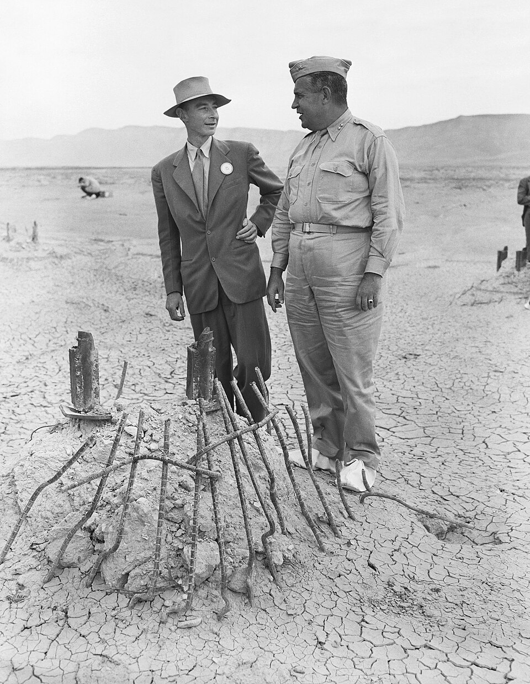
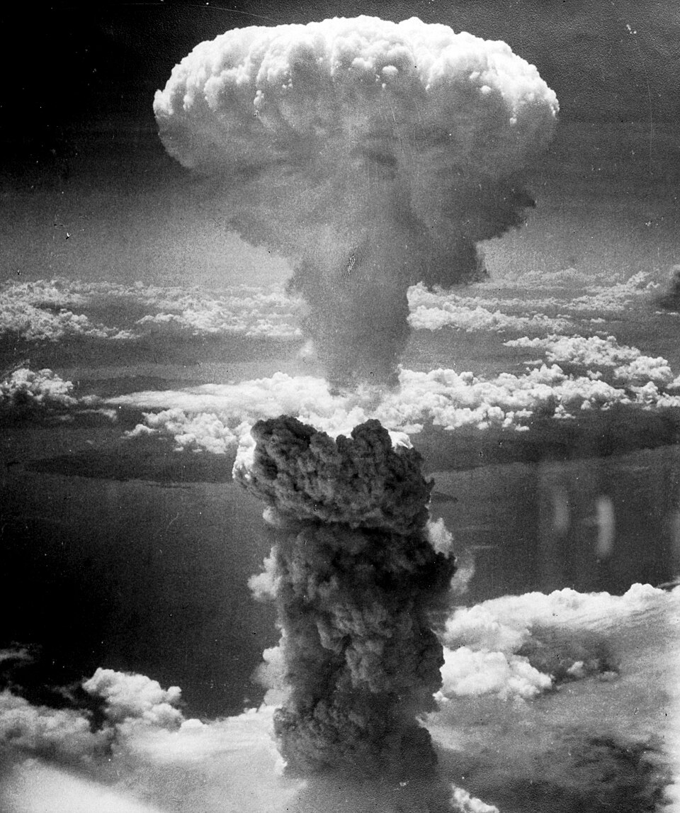

⏱️ 10초 카드 · 원자폭탄과 냉전 (1904~1967)
맨해튼 프로젝트트리니티원폭의 아버지과학자의 책임
여는 질문 — '할 수 있다'와 '해야 한다'는, 어떻게 다를까?
이름
한국어로버트 오펜하이머
원어J. Robert Oppenheimer
실제 발음로버트 오펜하이머
로마자J. Robert Oppenheimer
영어권J. Robert Oppenheimer
별칭원자폭탄의 아버지
왜 이 사람인가
위대한 과학적 성취와 수십만의 죽음을 부른 무기가 한 사람 안에 있어요. 사다코(피폭 소녀)와 나란히 놓으면, '과학의 힘을 누가 어떻게 써야 하는가'라는 질문이 또렷해지죠. 이 도감의 '과학자의 윤리' 계보를 잇는 인물이에요.
생애
미국의 물리학자로, 2차 세계대전 중 원자폭탄을 만든 '맨해튼 프로젝트'의 과학 책임자였어요. 그래서 '원자폭탄의 아버지'라 불려요.
1945년 첫 핵실험이 성공하자, 그는 인도 경전의 한 구절을 떠올렸다고 해요. '나는 이제 죽음이요, 세상의 파괴자가 되었다.' 자신이 만든 무기의 끔찍한 힘 앞에서 깊은 죄책감을 느꼈지요.
전쟁 뒤 그는 더 강한 수소폭탄 개발에 반대했고, 그 때문에 의심받고 공직에서 밀려나는 고초를 겪었어요. 영화 「오펜하이머」(2023)가 그의 이야기를 다뤘어요.
자료로 보기 — 유묵·사진



남긴 말
“나는 이제 죽음이요, 세상의 파괴자가 되었다.”
첫 핵실험(트리니티)이 성공하던 순간 떠올렸다고 회고한 인도 경전의 한 구절이에요. 자신이 만든 힘 앞의 두려움이 담겨 있죠. · 출처: 오펜하이머의 회고(바가바드기타 인용)
“물리학자들은 이제 죄를 알게 되었다.”
전쟁 뒤 한 강연에서 한 말이에요 — 과학이 '순수한 진리 탐구'만은 아니게 된 시대를 인정한 거죠. · 출처: 오펜하이머, MIT 강연(1947)
연표
- 1904출생
- 1942~45맨해튼 프로젝트 지휘
- 1945.7첫 핵실험(트리니티) 성공
- 1954공직 박탈(매카시즘 광풍)
- 1967사망
실험실에서 사막의 섬광까지
동부의 천재 물리학자가 사막의 비밀 도시에서 세상을 바꿀 무기를 만들기까지의 길이에요.
현재 지도 위 표시예요. 그가 만든 사막의 섬광은, 곧 지구 반대편 두 도시의 운명이 됐어요.
빛과 그림자위대한 과학적 성취와, 수십만의 죽음을 부른 무기를 만든 책임이 한 사람 안에 있어요. '할 수 있다'와 '해야 한다'는 다르다는, 과학자의 윤리를 묻게 해요.
더 깊이 (고등·일반)
맨해튼 프로젝트
2차 세계대전 중, 그는 사막 한가운데 비밀 도시 로스앨러모스에서 수천 명의 과학자를 이끌고 원자폭탄을 만들었어요. 그래서 '원자폭탄의 아버지'라 불리죠.
트리니티 — 첫 섬광(1945.7)
인류 최초의 핵폭발 실험이 성공한 순간, 그는 기뻐하기보다 두려워했어요. 자신이 무엇을 세상에 내놓았는지 직감한 거예요.
히로시마·나가사키
그가 만든 무기는 두 도시에 떨어져 수십만 명의 목숨을 앗아갔어요. 이 도감의 '사다코'가 바로 그 결과를 살아 낸 한 사람이에요 — 만든 사람과 그 결과를 나란히 봐야 해요.
수소폭탄 반대, 그리고 청문회(1954)
전쟁 뒤 그는 더 강한 수소폭탄 개발에 반대했어요. 그러자 '소련 첩자가 아니냐'는 의심(매카시즘)에 휘말려, 공직에서 밀려나는 고초를 겪었죠.
과학자의 윤리
'만들 수 있다'는 것과 '만들어야 한다'는 것은 다른 문제예요. 그의 후회와 고뇌는, 힘을 가진 사람이 그 힘을 어떻게 써야 하는지 지금도 묻게 해요. 영화 「오펜하이머」(2023)가 이 이야기를 다뤘죠.
사람의 그물 — 함께 읽을 인물
더 공부하기 — 여기서 출발하세요
📚 책으로
- 아메리칸 프로메테우스 ↗ · 카이 버드·마틴 셔윈영화 「오펜하이머」의 원작 — 그의 빛과 그림자.
- 원자폭탄 만들기 ↗ · 리처드 로즈맨해튼 프로젝트의 전모를 담은 고전.
📜 1차 사료
- 트리니티 실험 (미국 에너지부 자료) ↗첫 핵실험의 기록과 사진.
🎬 영상으로
- 영화 예고편 — 오펜하이머 (2023) ↗ · Universal Pictures UK그의 생애를 다룬 놀런 감독 영화의 공식 예고편.
📍 가 볼 곳
- 로스앨러모스 (뉴멕시코)원자폭탄을 만든 비밀 도시, 지금은 박물관이 있어요.
- 트리니티 사이트 (앨라모고도)첫 핵실험이 일어난 곳 — 일 년에 며칠만 공개돼요.